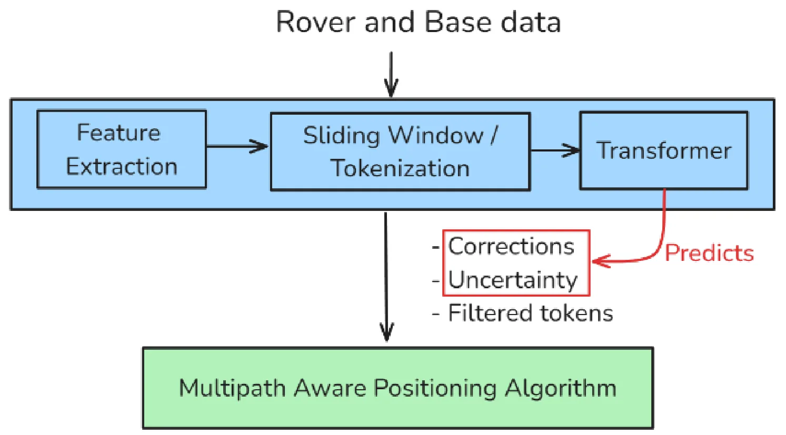
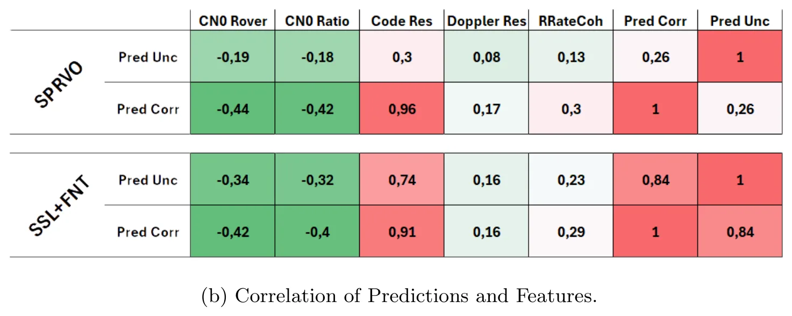
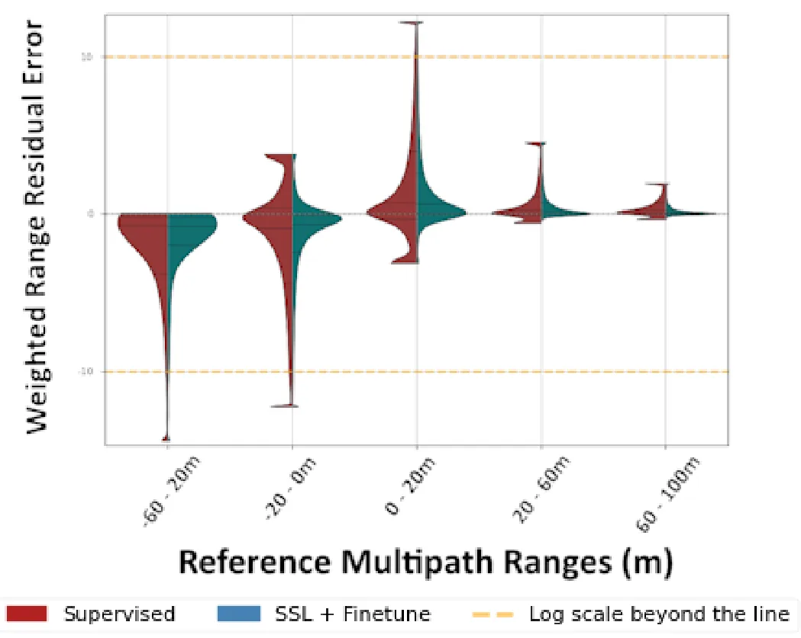
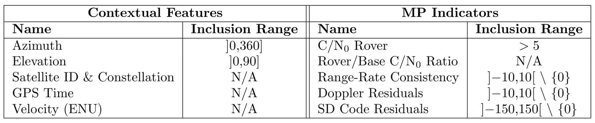
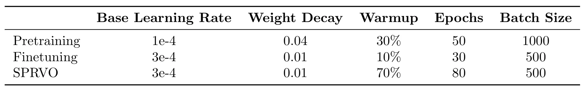
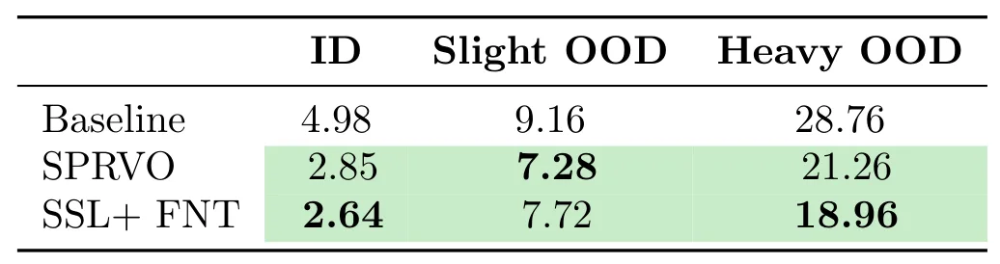

GNSS 自监督学习的机会：深度学习增强 PVT 算法评估Opportunities of Self Supervised Learning for GNSS: Evaluation of a Deep Learning-Enhanced PVT Algorithm
直接处理 GNSS PVT、多路径抑制和未见恶劣环境泛化，是本轮 GNSS 专项最相关论文。
一句话工作总结
直接命中城市峡谷和多路径鲁棒定位主题，后续应核查区域隔离、误差分布及与 INS 或因子图融合的兼容性。
摘要
方法用监督目标联合预测伪距修正和不确定性，并通过 JEPA 式自监督预训练提升表示质量；在多种驾驶场景中评估泛化，重点缓解密集城市区域的多路径干扰。
This work proposes a Deep Learning Enhanced PVT algorithm to mitigate multipath interference in dense urban areas. A supervised objective jointly predicts range corrections and uncertainty, while a JEPA-based self-supervised pretraining stage improves representation quality. The algorithm is evaluated over diverse driving scenarios, substantially improving PVT accuracy, particularly for unseen harsh urban conditions. These results highlight the potential of unlabelled GNSS data to improve generalization performance.
中文解读摘录
- 中文名：PIVOT：面向真实世界三维重建的多轨迹位姿、内参与新视点评测数据集和测试平台
- 方向：三维重建、NeRF、3DGS、位姿与相机内参评测。
- 要点：针对机器人和无人机环境中轨迹、位姿和内参不理想的问题，提供多轨迹采集数据、测量位姿与 COLMAP 优化位姿、标定与优化内参，并分别评估已见/未见轨迹、位姿来源和内参来源的敏感性。
- 判断：对真实部署下的重建评测很有价值，尤其适合检查“训练轨迹内插”是否掩盖了新轨迹泛化问题；不是 SLAM 算法本身。
图表/页面预览

{kind=link}

{kind=link}

{kind=link}

{kind=link}

{kind=link}

{kind=link}
